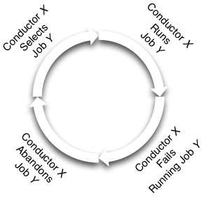
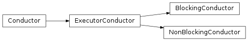

Conductors¶
{kind=link}
Overview¶
Conductors provide a mechanism that unifies the various concepts under a single easy to use (as plug-and-play as we can make it) construct.
They are responsible for the following:
- Interacting with jobboards (examining and claiming jobs).
- Creating engines from the claimed jobs (using factories to reconstruct the contained tasks and flows to be executed).
- Dispatching the engine using the provided persistence layer and engine configuration.
- Completing or abandoning the claimed job (depending on dispatching and execution outcome).
- Rinse and repeat.
Note
They are inspired by and have similar responsibilities as railroad conductors or musical conductors.
Considerations¶
Some usage considerations should be used when using a conductor to make sure it’s used in a safe and reliable manner. Eventually we hope to make these non-issues but for now they are worth mentioning.
Endless cycling¶
What: Jobs that fail (due to some type of internal error) on one conductor will be abandoned by that conductor and then another conductor may experience those same errors and abandon it (and repeat). This will create a job abandonment cycle that will continue for as long as the job exists in an claimable state.
Example:
{kind=link}
Alleviate by:
- Forcefully delete jobs that have been failing continuously after a given
number of conductor attempts. This can be either done manually or
automatically via scripts (or other associated monitoring) or via
the jobboards
trash()method. - Resolve the internal error’s cause (storage backend failure, other...).
Interfaces¶
-
class
taskflow.conductors.base.Conductor(name, jobboard, persistence=None, engine=None, engine_options=None)[source]¶ Bases:
objectBase for all conductor implementations.
Conductors act as entities which extract jobs from a jobboard, assign there work to some engine (using some desired configuration) and then wait for that work to complete. If the work fails then they abandon the claimed work (or if the process they are running in crashes or dies this abandonment happens automatically) and then another conductor at a later period of time will finish up the prior failed conductors work.
-
ENTITY_KIND= 'conductor'¶ Entity kind used when creating new entity objects
-
conductor¶ Entity object that represents this conductor.
-
notifier¶ The conductor actions (or other state changes) notifier.
NOTE(harlowja): different conductor implementations may emit different events + event details at different times, so refer to your conductor documentation to know exactly what can and what can not be subscribed to.
-
run(max_dispatches=None)[source]¶ Continuously claims, runs, and consumes jobs (and repeat).
Parameters: max_dispatches – An upper bound on the number of jobs that will be dispatched, if none or negative this implies there is no limit to the number of jobs that will be dispatched, otherwise if positive this run method will return when that amount of jobs has been dispatched (instead of running forever and/or until stopped).
-
-
taskflow.conductors.backends.fetch(kind, name, jobboard, namespace='taskflow.conductors', **kwargs)[source]¶ Fetch a conductor backend with the given options.
This fetch method will look for the entrypoint ‘kind’ in the entrypoint namespace, and then attempt to instantiate that entrypoint using the provided name, jobboard and any board specific kwargs.
-
class
taskflow.conductors.backends.impl_executor.ExecutorConductor(name, jobboard, persistence=None, engine=None, engine_options=None, wait_timeout=None, log=None, max_simultaneous_jobs=-1)[source]¶ Bases:
taskflow.conductors.base.ConductorDispatches jobs from blocking
run()method to some executor.This conductor iterates over jobs in the provided jobboard (waiting for the given timeout if no jobs exist) and attempts to claim them, work on those jobs using an executor (potentially blocking further work from being claimed and consumed) and then consume those work units after completion. This process will repeat until the conductor has been stopped or other critical error occurs.
NOTE(harlowja): consumption occurs even if a engine fails to run due to a atom failure. This is only skipped when an execution failure or a storage failure occurs which are usually correctable by re-running on a different conductor (storage failures and execution failures may be transient issues that can be worked around by later execution). If a job after completing can not be consumed or abandoned the conductor relies upon the jobboard capabilities to automatically abandon these jobs.
-
LOG= None¶ Logger that will be used for listening to events (if none then the module level logger will be used instead).
-
REFRESH_PERIODICITY= 30¶ Every 30 seconds the jobboard will be resynced (if for some reason a watch or set of watches was not received) using the ensure_fresh option to ensure this (for supporting jobboard backends only).
-
WAIT_TIMEOUT= 0.5¶ Default timeout used to idle/wait when no jobs have been found.
-
MAX_SIMULTANEOUS_JOBS= -1¶ Default maximum number of jobs that can be in progress at the same time.
Negative or zero values imply no limit (do note that if a executor is used that is built on a queue, as most are, that this will imply that the queue will contain a potentially large & unfinished backlog of submitted jobs). This may get better someday if https://bugs.python.org/issue22737 is ever implemented and released.
-
NO_CONSUME_EXCEPTIONS= (<class 'taskflow.exceptions.ExecutionFailure'>, <class 'taskflow.exceptions.StorageFailure'>)¶ Exceptions that will not cause consumption to occur.
-
EVENTS_EMITTED= ('compilation_start', 'compilation_end', 'preparation_start', 'preparation_end', 'validation_start', 'validation_end', 'running_start', 'running_end', 'job_consumed', 'job_abandoned')¶ Events will be emitted for each of the events above. The event is emitted to listeners registered with the conductor.
-
stop(timeout=None)[source]¶ Requests the conductor to stop dispatching.
This method can be used to request that a conductor stop its consumption & dispatching loop.
The method returns immediately regardless of whether the conductor has been stopped.
-
dispatching¶ Whether or not the dispatching loop is still dispatching.
-
run(max_dispatches=None)[source]¶ Continuously claims, runs, and consumes jobs (and repeat).
Parameters: max_dispatches – An upper bound on the number of jobs that will be dispatched, if none or negative this implies there is no limit to the number of jobs that will be dispatched, otherwise if positive this run method will return when that amount of jobs has been dispatched (instead of running forever and/or until stopped).
-
wait(timeout=None)[source]¶ Waits for the conductor to gracefully exit.
This method waits for the conductor to gracefully exit. An optional timeout can be provided, which will cause the method to return within the specified timeout. If the timeout is reached, the returned value will be
False, otherwise it will beTrue.Parameters: timeout – Maximum number of seconds that the wait()method should block for.
-
Implementations¶
Blocking¶
-
class
taskflow.conductors.backends.impl_blocking.BlockingConductor(name, jobboard, persistence=None, engine=None, engine_options=None, wait_timeout=None, log=None, max_simultaneous_jobs=1)[source]¶ Bases:
taskflow.conductors.backends.impl_executor.ExecutorConductorBlocking conductor that processes job(s) in a blocking manner.
-
MAX_SIMULTANEOUS_JOBS= 1¶ Default maximum number of jobs that can be in progress at the same time.
-
Non-blocking¶
-
class
taskflow.conductors.backends.impl_nonblocking.NonBlockingConductor(name, jobboard, persistence=None, engine=None, engine_options=None, wait_timeout=None, log=None, max_simultaneous_jobs=9, executor_factory=None)[source]¶ Bases:
taskflow.conductors.backends.impl_executor.ExecutorConductorNon-blocking conductor that processes job(s) using a thread executor.
- NOTE(harlowja): A custom executor factory can be provided via keyword
- argument
executor_factory, if provided it will be invoked atrun()time with one positional argument (this conductor) and it must return a compatible executor which can be used to submit jobs to. IfNoneis a provided a thread pool backed executor is selected by default (it will have an equivalent number of workers as this conductors simultaneous job count).
-
MAX_SIMULTANEOUS_JOBS= 9¶ Default maximum number of jobs that can be in progress at the same time.
Hierarchy¶
